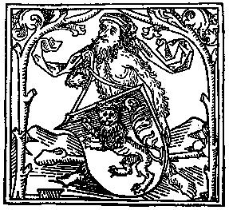
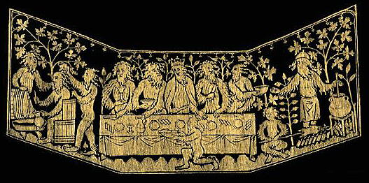
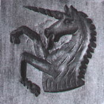

|
Menu for the Alabama Renaissance Faire, October
19th, 2002
Recipes for the official menu for this event.
NOTE on the modern versions: all wine will be substituted with fruit
juices.
Ingredients List
Sallet - Salad
Our modern recipe is an adaptation of the following two period receipts:
(1). Salat. Take persel, sawge, grene garlec, chibolles, letys, leek,
spinoches, borage, myntes, prymos, violettes, porrettes, fenel, and toun
cressis, rew, rosemarye, purslarye; laue and waishe hem clene. Pike hem.
Pluk hem small wiþ þyn honde, and myng hem wel with rawe oile;
lay on vyneger and salt, and serue it forth.
- Hieatt, Constance B. and Sharon Butler. Curye
on Inglish: English Culinary Manuscripts of the Fourteenth-Century (Including
the Forme of Cury). New York: for The Early English Text Society by
the Oxford University Press, 1985.
Gode Cookery translation:
Salad. Take parsley, sage, green garlic, scallions, lettuce, leek,
spinach, borage, mints, primroses, violets, "porrettes" (green onions,
scallions, & young leeks), fennel, and garden cress, rue, rosemary,
purslane; rinse and wash them clean. Peel them. (Remove stems, etc.) Tear
them into small pieces with your hands, and mix them well with raw oil;
lay on vinegar and salt, and serve.
(2). To Compound an excellent Sallet, and which indeede is usuall
at great Feasts, and upon Princes Tables. Take a good quantity of blaunch’t
Almonds, and with your Shredding knife cut them grosly; then take as manie
Raisyns of the sunne cleane washt, and the stones pick’t out, as many Figges
shred like the Almonds, and as many Capers, twise so many Olives, and as
many Currants as of all the rest cleane washt: a good handfull of the small
tender leaves of Red Sage and Spinage; mixe all these well together with
a good store of Sugar and lay them in the bottome of a great dish, then
put unto them Vinegar and Oyle, and scrape more Sugar over all; then take
Orenges and Lemmons, and paring away the outward pills, cut them into thinne
slices, then with those slices cover the sallet all over; which done, take
the thin leafe of the red Coleflowre, and with them cover the Orenges and
Lemmons all over, then over those red leaves lay another course of old
Olives, and the slices of wel pickld Coucumbers, together with the very
inward hart of your Cabbage lettice cut into slices, then adorne the sides
of the dish and the top of the Sallet with more slices of Lemons and Orenges
and so serve it up.
- Beebe, Ruth Anne. Sallets, Humbles, & Shrewsbery
Cakes. A Collection of Elizabethan Recipes Adapted for the Modern Kitchen.
Boston: David R. Godine, 1976.
What we will do: a salad of various lettuces & herbs,
raisins, oranges, lemons, cucumbers, & nuts, dressed with red wine
vinegar, oil, and a little sugar. This is the same salad which was served
at the 2001 feast.
Servers will be given platters of salad along with the appropriate
serving utensils and will serve the diners individually.
Ingredients
Apple Muse - Apple Soup
Apple Muse.---Take Appelys an sethe hem, an Serge hem þorwe
a Sefe in-to a potte; þanne take Almaunde Mylke & Hony, an caste
þer-to, an gratid Brede, Safroun, Saunderys, & Salt a lytil,
& caste all in þe potte & lete hem sethe; & loke þat
þou stere it wyl, & serue it forth.
- Austin, Thomas. Two Fifteenth-Century Cookery-Books.
Harleian MS. 279 & Harl. MS. 4016, with extracts from Ashmole MS. 1429,
Laud MS. 553, & Douce MS 55. London: for The Early English Text
Society by N. Trübner & Co., 1888.
Gode Cookery translation:
Take apples an boil them, and pass it through a strainer into a pot;
than take almond milk & honey, and add, and grated bread, saffron,
sandalwood, & a little salt, & put all in a pot & let it boil;
& see that you stir it well, & serve it forth.
What we will do: a very thick apple soup made with milk and
honey, served hot.
Servers will be given large bowls of soup along with the appropriate
serving utensils, and will ladle the soup to the diners individually. Disposable
bowls will be supplied to those who need them.
Ingredients
Funges - Mushrooms
Take funges and pare hem clene, and dyce hem; take leke and shrede
hym small, and do hym to seeþ in gode broth. Colour it with safroun,
and do þerinne powdour fort.
- Hieatt, Constance B. and Sharon Butler. Curye
on Inglish: English Culinary Manuscripts of the Fourteenth-Century (Including
the Forme of Cury). New York: for The Early English Text Society by
the Oxford University Press, 1985.
What we will do: mushrooms & onions are cooked in
a vegetarian, kosher, beef-flavored broth with white pepper, black pepper,
& cloves.
Servers will be given large bowls of mushrooms along with the appropriate
serving utensils and will serve the diners individually.
This will be a vegetarian-friendly dish, as the broth used is both
meatless & kosher.
Ingredients
Carrots
You shall take as many carrots as you will, and scrape them well
and cut them into pieces, and cook them like the turnips. (Carrots be red
roots which be sold in the market, for a silver penny a handful.)
The Menagier's instructions for turnips has them
boiled until tender, then cooked in honey.
- Power, Eileen. The Goodman of Paris (Le Ménagier
de Paris). A Treatise on Moral and Domestic Economy by A Citizen of Paris
(c. 1395). New York: Harcourt, Brace and Company, 1928
What we will do: carrots will be cooked al dente, then
preserved in a light honey sauce. This will be made several days in advance
of the feast.
Servers will be given large bowls of carrots along with the appropriate
serving utensils and will serve the diners individually.
Ingredients
Makerouns - Macaroni and Cheese
Makerouns. Take and make a thynne foyle of dowh, and kerue it on
pieces, and cast hym on boiling water & seeþ it wele. Take chese
and grate it, and butter imelte, cast bynethen and abouven as losyns; and
serue forth.
- Hieatt, Constance B. and Sharon Butler. Curye
on Inglish: English Culinary Manuscripts of the Fourteenth-Century (Including
the Forme of Cury). New York: for The Early English Text Society by
the Oxford University Press, 1985.
Gode Cookery translation:
Macaroni. Take and make a thin foil of dough, and carve it in pieces,
and cast them in boiling water and seethe it well. Take cheese and grate
it, and butter melted, cast beneath and above as for lasagna, and serve
forth.
What we will do: home-made noodles are cooked until tender,
then tossed with butter, a blend of grated parmesan & romano cheeses,
and sweet savory herbs.
Servers will be given platters of makerouns along with the appropriate
serving utensils and will serve the diners individually.
NOTE: we're instructed to make this dish like losyns, or lasagna,
& a recipe for losyns exists elsewhere in Forme of Cury;
it is essentially our modern lasagna, without the red sauce but with sheets
of noodles layered with grated cheese and powdour (spices). Following this
example, we are adding ground herbs, such as sweet basil & thyme, to
our recipe.
Although this dish is described as being made like lasagna, with
layers of pasta & cheese, the noodles themselves are more like our
contemporay egg noodles or macaroni and not like lasagna pasta.
Ingredients
Poulés rostis - Roasted Chicken with Three
Sauces
Poulés rostis. They should be plucked in water, larded and
roasted; they are eaten with Cold Sage Sauce or with Cameline Sauce or
with verjuice.
- Scully, Terence. Le Viandier de Taillevent. An
Edition of all Extant Manuscripts. Ottawa: University of Ottawa Press,
1988.
What we will do: game hens roasted with a little olive oil,
spices, & herbs, served with the three different dipping sauces: a
savory made with sage, a hot & spicy made with mustard & cinnamon,
& a sweet & sour made with cherries.
Servers will be given platters holding small disposable bowls of
the dipping sauces, 3 different sauces for each diner, and will pass these
out accordingly. Servers will then be given platters of roasted chicken
along with the appropriate serving utensils and will serve the diners individually,
1/2 hen per person.
The Sauces: (1) Cold Sage. (2) Cameline. (3) Verjuice.
(1). Froide sauge. Cook your poultry in water, then set it to cool;
grind ginger, cassia buds, grains of Paradise and cloves, and do not strain
them; then grind bread, parsley and sage, with, if you wish, a little saffron
in this greenery to make it a bright green, and sieve this; and some people
add strained, hard-cooked egg yolks steeped in vinegar; do not boil.
- Scully, Terence. Le Viandier de Taillevent. An
Edition of all Extant Manuscripts. Ottawa: University of Ottawa Press,
1988.
What we will do: a dipping sauce made from chicken broth,
parlsey, & sage, thickened with bread.
(2). Cameline Mustard sauce. Take mustard, red wine, cinnamon powder
and enough sugar, and let everything steep together. It should be thick
like cinnamon. It is good for any roast.
- Scully, Terence. Le Viandier de Taillevent. An
Edition of all Extant Manuscripts. Ottawa: University of Ottawa Press,
1988.
What we will do: Dijon mustard blended with red grape juice,
cinnamon, & honey.
(3). Sauce of Sour Cherries or of Ordinary Cherries. Follow the directions
for the Black Grape Sauce but, since the sour cherries are tart, add in
all the sugar and cinnamon your master may wish.
Black Grape Sauce. Get good black grapes, crush them carefully into
a vessel with a crustless loaf of bread, and add in a little verjuice so
the grapes will not be so sweet; boil this, but first strain it; when you
have boiled it, add cinnamon, ginger and other sorts of spices. Note that
this strained sauce should boil half an hour so that it is somewhat thick.
- Scully, Terence. Cuoco Napoletano. The Neapolitan
Recipe Collection (New York, Pierpont Morgan Library, MS Buhler, 19): A
Critical Edition and English Translation. Ann Arbor: The University
of Michigan Press, 2000.
What we will do: a sweet and sour sauce will be made from
cherries, fruit juice, unseasoned white bread crumbs, sugar, & spices.
Note: verjuice is very tart grape juice, or unfermented wine, and
may be substituted with a variety of sour fruit juices. We are using Sour
Cherry Sauce as an alternative to actual verjuice.
Ingredients
Seed Cake
This is an original recipe, based on cake receipts from A.W.'s
Book of Cookrye (1591) and The English Huswife by Gervase Markham,
1615. These sources are not medieval, but this type of sweet, almost bread-like
round cake was very common during the Middle Ages, and our recipe is an
approximation of how this delectable may have been prepared during that
earlier period. A round cake such as this is described in Chaucer's Canterbury
Tales, where it is compared to the shape of the medieval round shield,
the Buckler.
What we will do: round, home-made white cakes are baked with
a variety of period seeds & spices.
Servers will be given platters of sliced seed cake along with the
appropriate serving utensils and will serve the diners individually.
Ingredients
Woodwoses

From a German printer's mark.

Woodwoses at a forest feast.
The Golden Unicorn Wafer
The wafer mold shown here is a historical recreation of a period
wafer press from the 1600's, showing a unicorn. Each diner will get one
large round wafer made from this mold and covered in edible gold. We hope
that this will become a tradition for the feast, with a different design
presented each year for the diners to keep as a souvenir or to eat!

Ingredients
Stwed Beeff - Sweet and Sour Beef Ribs
Stwed Beeff. ¶ Take faire Ribbes of ffresh beef, And (if thou
wilt) roste hit til hit be nygh ynowe; theñ put hit in a faire possenet;
caste þer-to parcely and oynons mynced, reysons of corauns, powder
peper, canel, clowes, saundres, safferoñ, and salt; theñ
caste there-to wyñ and a litull vynegre; sette a lyd oñ þe
potte, and lete hit boile sokingly on a faire charcole til hit be ynogh;
þeñ lay the fflessh, in disshes, and the sirippe there-vppoñ,
And serve it forth.
- Austin, Thomas. Two Fifteenth-Century Cookery-Books.
Harleian MS. 279 & Harl. MS. 4016, with extracts from Ashmole MS. 1429,
Laud MS. 553, & Douce MS 55. London: for The Early English Text
Society by N. Trübner & Co., 1888.
Gode Cookery translation:
Take fair ribs of fresh beef, and (if you will) roast it til it be
nearly done; then put it in a fair pot; cast thereto parsley and onions
minced, raisins of Corinth, powder pepper, cinnamon, cloves, sandalwood,
saffron, and salt; then cast thereto wine and a little vinegar; set a lid
on the pot, and let it boil well on a fair charcoal til it be enough; then
lay the flesh in dishes, and the syrup thereon, and serve forth.
What we will do: boneless beef ribs are prepared in a sweet
& sour sauce made of fruits, spices, & onions.
Servers will be given platters of beef ribs in sauce along with the
appropriate serving utensils and will serve the diners individually.
Ingredients
Perys en Composte - Pears in Fruit Sauce
Perys en Composte. Take Wyne an Canel, & a gret dele of Whyte
Sugre, an set it on þe fyre & hete it hote, but let it nowt boyle,
an draw it þorwe a straynoure; þan take fayre Datys, an pyke
owt þe stonys, an leche hem alle þinne, an caste þer-to;
þanne take Wardonys, an pare hem and sethe hem, an leche hem alle
þinne, & caste þer-to in-to þe Syryppe; þanne
take a lytil Sawnderys, and caste þer-to, an sette it on þe
fyre; an yif þow hast charde quynce, caste þer-to in þe
boyling, an loke þat it stonde wyl with Sugre, an wyl lyid wyth Canel,
an caste Salt þer-to, an let it boyle; an þan caste yt on a
treen vessel, & lat it kele, and serue forth.
- Austin, Thomas. Two Fifteenth-Century Cookery-Books.
Harleian MS. 279 & Harl. MS. 4016, with extracts from Ashmole MS. 1429,
Laud MS. 553, & Douce MS 55. London: for The Early English Text
Society by N. Trübner & Co., 1888.
Gode Cookery translation:
Pears in Compote. Take wine and cinnamon, & a great deal of white
sugar, and set it on the fire and heat it hot, but let it not boil, and
draw it through a strainer; then take fair dates, and pick out the
stones, and slice them all thin, and cast thereto; then take Wardens (pears),
and pare them and seethe them, and slice them all thin, and cast thereto
into the Syrup; then take a little sandalwood, and cast thereto, and set
it on the fire; and if you have quinces, cast thereto into the boiling,
and look that it stand well with sugar, and well laid with cinnamon, and
cast salt thereto, and let it boil; and then cast it in a wooden vessel,
& let it cool, and serve forth.
What we will do: pears are cooked al dente, then preserved
in a fruit & date sauce. This will be made several days in advance
of the feast.
Servers will be given large bowls of the pears in sauce along with
the appropriate serving utensils and will serve the diners individually.
Ingredients
Sambocade - Elderflower Cheesecake
Sambocade. Take and make a crust in a trap & take cruddes and
wryng out þe wheyze and drawe hem þurgh a straynour and put
hit in þe crust. Do þerto sugar the þridde part, &
somdel whyte of ayren, & shake þerin blomes of elren; & bake
it vp with eurose, & messe it forth.
- Hieatt, Constance B. and Sharon Butler. Curye
on Inglish: English Culinary Manuscripts of the Fourteenth-Century (Including
the Forme of Cury). New York: for The Early English Text Society by
the Oxford University Press, 1985.
Gode Cookery translation:
Elderflower Cheesecake. Take and make a crust in a pie pan &
take curds and wring out the whey and pass it through a strainer and put
it in the pie shell. Do thereto sugar the third part (a "þridde part"
- about 1/3 cup), and a portion of egg whites, and shake therein blooms
of elder (dried elderflowers); and bake it up with rosewater, and serve
it forth.
What we will do: small individual pastry shells will be made
and filled with a blend of sweetened soft cheeses and rosewater, then baked.
Servers will be given platters of tarts along with the appropriate
serving utensils and will serve the diners individually.
Ingredients
Firenze Wafers & Spiced Fruit
What we will do: orange slices coated in sugar & spices will
be placed on a platter, then covered with the Firenzi Wafers, small cakes
shaped like fleurs-de-lis.
The servers will conclude the feast by bringing out the "Roial spicerye"
platters containing wafers & spiced fruits. Diners will help themselves
as the platters are offered to to them.
Ingredients
© 2002 Gode Cookery
http://www.godecookery.com
|